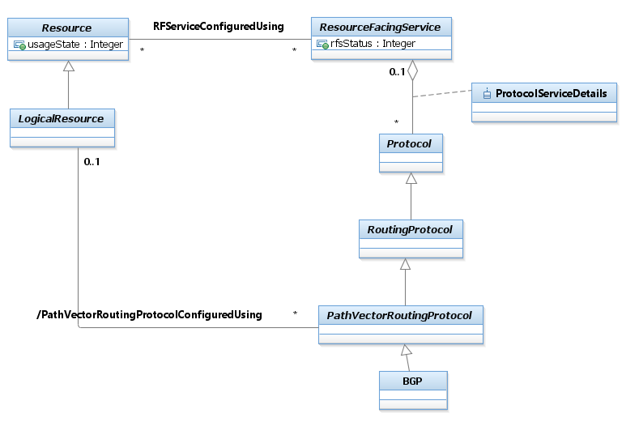

SID Models::Service Domain::Service ABE::_ Service Addendum Figures::Figure SO.07 - Representing BGP as a LogicalResource Diagram Figure SO.07 - Representing BGP as a LogicalResource Let’s consider the simple example of a Customer purchasing a VPN. The VPN itself may be both a Product and a CustomerFacingService, since the VPN provides a number of functions (e.g., connectivity) that people commonly refer to as Services. Suppose the VPN is a particular type of VPN, defined by RFC2547bis. This specification mandates that BGP (the Border Gateway Protocol, which is an inter-domain routing protocol that is used to exchange reachability information with other BGP systems) is used for route advertisement. The Customer doesn’t buy BGP services, yet BGP is required for this type of VPN to function. Therefore, BGP is a ResourceFacingService.The following Figure takes an extract from the LogicalResource model and shows that BGP is a particular type of RoutingProtocol. This model defines several different types of Protocols. A RoutingProtocol is a particular type of protocol that accomplishes routing through the implementation of a specific algorithm. Protocols are modeled as a type of LogicalResource.Note: Routing is defined as the process of finding a path to a destination.To connect this properly, we also need the concept of a LogicalDevice. This is the logical analog to the PhysicalDevice class. A LogicalDevice is an abstract base class for all logical resources that are inherently manageable and make up a Product. It is used to describe different types of logical features and services that constitute a Product. It has two main purposes: (1) to collect common attributes and relationships for all logical resources, and (2) to provide a convenient, single point where relationships with other managed objects can be defined.)Thus, BGP is associated with a ResourceFacingService through the RFServiceUsesProtocol aggregation.The ProtocolServiceDetails association class defines the Protocols that are required by a particular ResourceFacingService.Thus, BGP is associated with a ResourceFacingService through the ProtocolServiceDetails association class. The ProtocolServiceDetails association class defines the Protocols that are required by a particular ResourceFacingService.

Properties:
View
Name
Figure SO.07 - Representing BGP as a LogicalResource